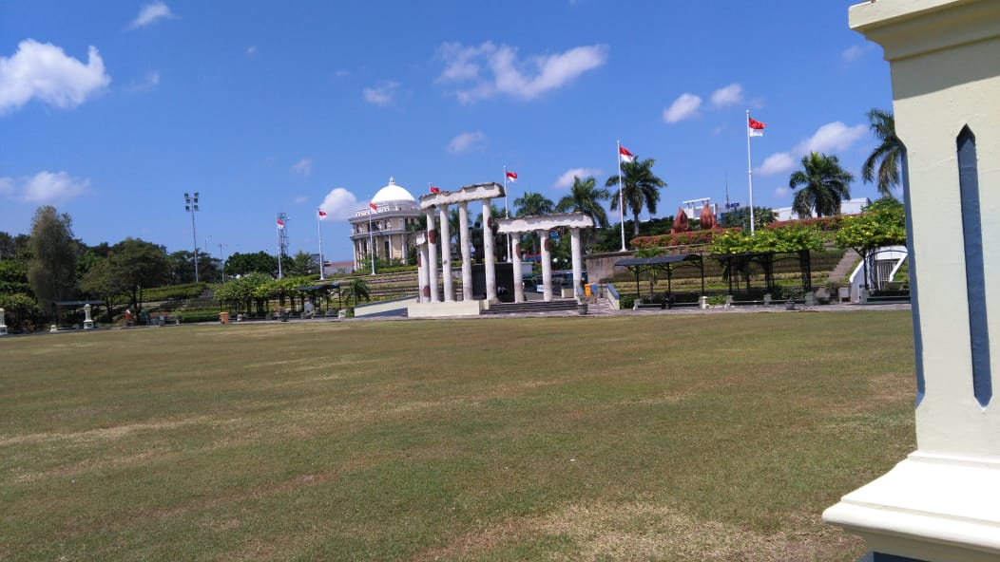
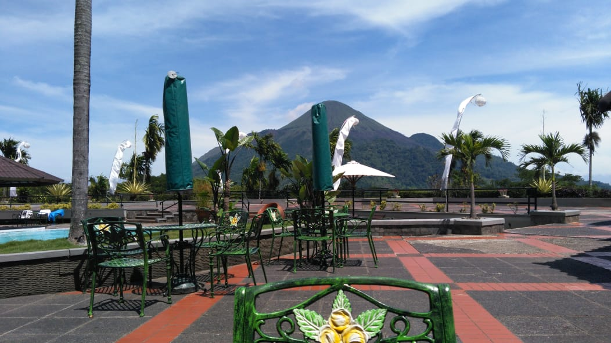
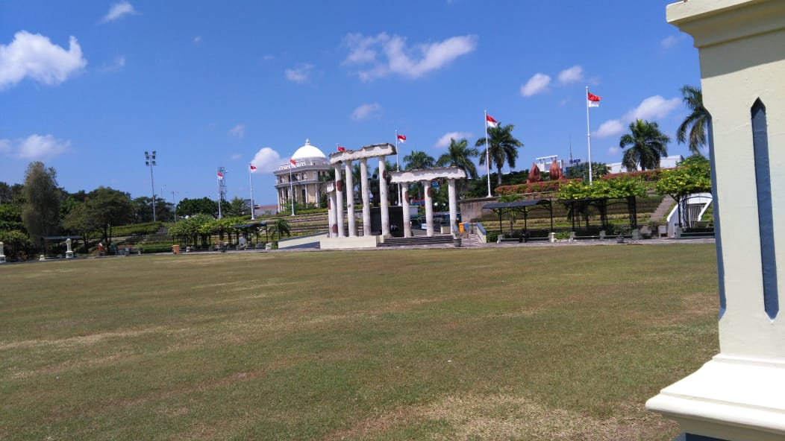
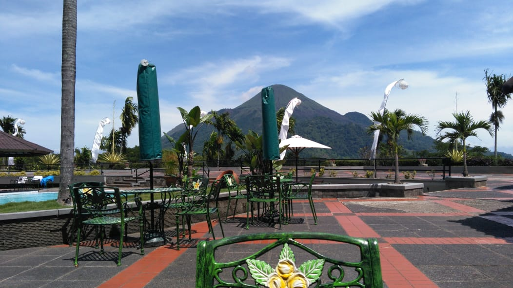

Sparkling Surabaya
My Beautiful Hometown
 



Pic by me
Surabaya is my hometown. In Surabaya, I have experienced many joys and sorrows in various places. Either from food that I can't leave behind, or from places that hold memories in my life. Surabaya is a city full of miracles, from when I was born, until now I studied at one of the public universities in Surabaya. Surabaya is my hometown. In Surabaya, I have experienced many joys and sorrows in various places. Either from food that I can't leave behind, or from places that hold memories in my life. Surabaya is a city full of miracles, from when I was born, until now I studied at one of the public universities in Surabaya.
Surabaya is known as the City of Heroes because of its history which was taken into account in the struggle of Arek-Arek Suroboyo (Surabaya youths) in defending the independence of the Indonesian nation from invaders.
One of the most famous tourist attractions in Surabaya is "Tugu Pahlawan". Tugu is a historical monument.
The monument was built so that the children of Surabaya know what the heroes of the past did and they will remember the services of these heroes. Tugu Pahlawan also has many unique and historical objects.
Surabaya, which is the capital of East Java Province, is the second largest city in Indonesia after Jakarta. It is divided by five areas; Central Surabaya, North Surabaya, East Surabaya, South Surabaya and West Surabaya. Usually the temperature is 32 degrees Celsius, so the city is not cool. On the other hand, Surabaya is a dense and modern city with busy people every day. The view of Surabaya is different from Malang's, because we cannot see the mountains. However, we can see many buildings with modern architecture and several buildings with colonial architecture. It also has Asian architecture buildings in Chinatown.
For me, Surabaya is the best place to spend a day with lots of happiness. How perfect it is.